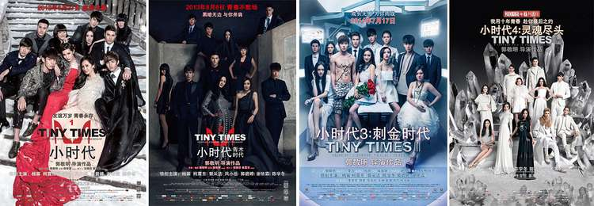

专访导演郭敬明：用CG特效最大限度的实现想象力
猫眼电影
09-22
14:56
 22448
22448
挑战：利用CG特效最大化的还原真实
猫眼电影：华语电影圈首次尝试全真人CG，导演是第一个吃螃蟹的人，当初为什么会有这样的选择？
郭敬明：因为当初在筹备《爵迹》这个项目的时候一直在考虑到底是该实拍还是用CG的形式来实现，因为各有各的难点，实拍最大的问题是有很多固有突破不了的限制，有些是演员天生没办法做到的事情，包括有一些摄影机到不了的镜位，或是达不到的运动，这些都是限制。
全CG的限制就是对演员的微表情很难把控，如果你要还原一个真人，你做一个怪物或是外星人还反倒容易，跟人不像，稍微有一点喜怒哀乐大家不会觉得是个问题，没人见过外星人长什么样子。就像《魔兽》里面吴彦祖演一个兽人，其实不管那个兽人长成什么样子，你都不会觉得奇怪，但是你把它做成吴彦祖的样子，你稍微有一点点不像，观众都会说这个不像，这个就是最大的区别。

动作捕捉制作特辑
所以当时各自都有很难的地方， 我们之所以决定用CG来呈现，是因为《爵迹》首先是一个奇幻的、视觉为先的电影，如何最大限度的实现它的想象力是最重要的。 所以当时决定放弃实拍电影，攻克关于人物写实度的问题。当时有很简单的方式就是把人做的像动画人，但我们不想把它变成一个没有真实感的纯动画片，所以我们尽可能的去模拟真实世界的样子，包括真实世界光线、植物、大气、烟雾、人的表情如喜怒哀乐，我们都希望尽可能去还原真实
猫眼电影： 说到动作捕捉和CG特效，导演邀请了很多著名的特效公司，应该说耗费了很大的成本和精力，这个在初期导演有考虑产出问题或者说在效果上有某种程度的预期吗？
郭敬明：如果是同样成本的话，实拍不见得能实现现在这样一个惊艳的效果，所以说CG带来的整个视觉冲击力是非常震撼的，特别是当你在最终的大银幕上感受的时候，跟实拍是完全不一样的，它的那种特有的CG电影的风格是你很难用真人去实现的一些东西。
猫眼电影：电影用了两年的时间打磨，导演曾说精细到鬼山莲泉的发丝、幽冥从湖底走出身上的水珠都有精确的计算，制作期间遇到过哪些不曾预判过的困难？
郭敬明：太多太多困难了，因为很多困难是你根本预期不到的。首先是技术的壁垒，比如好莱坞的核心团队就是不会开放这个软件给你使用，你明明知道用这个就能解决这个问题，但他就是不开放给你。所以你只能自己去摸索，自己写新的程序去解决这个困难。
其次是你完全查不出原因怎么会出这个情况，比如说有一个镜头渲染，一切环节反复检查都对，但最后渲染出来的镜头里面陈学冬有一条眉毛就飞了，就不见了，你死活就查不出是什么原因。你检查每一个环节每一个模型，那条眉毛都在，但就是到最后一个环节里那条眉毛就不见了。因为CG是个电脑生成的东西，有时候会出现错误、漏洞，或者人为难以预料的事情。
《爵迹》这个电影的体量对整个模型的精度有很高的要求，因为只是在手机上做一个精细的很简单，但是放在大荧幕上要达到很高的精细度是非常困难的，我们做到后期的时候，每一个技术员工的电脑都升级到不能再升级。
我们之前做的一个城市叫雷恩，几千栋大大小小的建筑，每一个建筑上面成千片瓦片都是3D建模建出来的，当无数栋房子拼成了一整个城市的时候，我们有一个镜头是穿越整个城市，当所有的建筑拼成一个城市之后，我们却发现我们再也打不开这个文件，因为它实在是太大，于是我们又回到技术部门，技术部门写代码默认远景的房子用低精度的形式来打开，中景的房子用中精度来打开，近景的房子用非常高的精度打开，这样才勉强把城市文件调出来。
因为城市的灯火、每扇窗户透出来的光是不一样的，这种东西你没办法在模型里做，只能回到技术部门来写插件帮你实现，所以小到空气里漂浮的一颗一颗的尘埃、大到一条龙、一个岛屿的崩塌，你看到的一切都是需要电脑制作出来才能看得到，精确到一个演员的雀斑、一颗痣，或者肌肉上的一个疤痕，这些都需要电脑制作来完成， CG特效就像个黑洞可以无休止的去添加细节。但你添加到一定的极限的时候，你就再也做不上去了，因为你的时间、预算、人力、物力各方面是有限的，所以说CG电影的可怕就在于它没有极限，可以追求到无限制的好。
猫眼电影：曝光的预告片中有大量的打斗场面，跟模拟真人的表情、外表相比，哪个部分实现起来更难？
郭敬明：打斗很简单，越近的特写越难，散乱的头发实现起来比较困难。散的头发被风吹起来就是一根一根的，每一根就是一个3D模型，你让它动起来的话就要每一根都去做结算，但是人有十几万根头发，十几万根一起结算没有机器可以拖得动，解决办法就是每十几根头发做一根引导曲线，它追随这个引导曲线的去动。
因为头发和布料的结算都是模拟物理的情况，可以设定风速和方向，但是无法决定它飘成什么样子，就像你实拍电影拿一个鼓风机去吹头发，但是你不知道你吹出来好不好看，有可能飞的特别丑，有可能飞的不舒服，但这个你在渲染之前都不知道，你只能一遍一遍的去试，突然试到有一遍飞的特别好的，赶紧存下来。 越软的东西在电影里是越难实现的，反倒是很硬的盔甲、剑之类的更容易通过模型复现，所以在电影里水是最难做的。 但在电影里最后40分钟是在海上面打的，当时做的时候也是把大家逼疯了。
还有一个镜头是陈学冬从山上跑下一路救吴亦凡的镜头也是非常复杂，这个镜头有一分多钟，实拍根本不可能拍出这个镜头，除非你让摄影师扛着机器跳悬崖才有可能拍到，但在CG电影里有很多空间能实现这个一镜到底的运行，但这个对演员的要求也变高了，他要把所有的动作连接起来，通过动作捕捉的人员把他的动作进行缝合，让他看起来是连串的动作，所以他在表演的时候每一个切开的地方他都要记住自己动作的切点在哪里，这个镜头也用了6、7个月的时间，而且这个跑下山的镜头中间有一百多只各种各样的魂兽，包括龙、蜥蜴等。每一只蜥蜴的动态血、皮肤等都要用CG特效制作出来。在剧本讨论阶段这两个镜头提出来时，几乎所有人都说导演这两个镜头可不可以删掉，当时想说既然做了CG电影不能怎么简单怎么做，删掉感觉可惜了，于是就想挑战看看。
猫眼电影：大家对CG特效这个概念还比较陌生，CG特效会有多大制作成本以及哪些制作方法，导演可以谈一下吗？
郭敬明：CG电影和实拍电影有一个最大的区别就是实拍电影是光学成像，所有东西在你拍下来的瞬间无论放大缩小全部都在，这是光学成像的原理。 但是CG电影中你所看到的东西都是在渲染的时候，根据物体在画面上占据的大小自动渲染出符合那个大小的精度，这就要求你的画面不能放大也不能缩小，缩小就不是原来的精度，所以必须按照标准尺寸来计算，这也是为什么大家在手机上看所有的细节大量的丢失。 你不能看到人脸上的皱纹、毛孔，但这些其实全部都在，这也是我们比较沮丧的原因，如何才能呈现给观众我们真正做出来的东西。

在第一版预告片中大家提到的一些问题我们还是有改进，比如说肤质不够细腻，或者不够写实，我们后期都加了很多很写实的东西，甚至放弃了一些特别美的，比如女孩都希望自己皮肤特别好，但是CG特效如果特别好会显得特别假，我们会跟演员商量还原你的一些痘印、毛孔或者小雀斑之类的，大家都很理解，因为一般实拍就是盖很厚的粉底，光一打美到不行，CG电影如果这样做就会很假，CG必须反过来做比如眼角一些皱纹之类的都有去强化和加深。
猫眼电影：《爵迹》选择大量明星加盟，这方面导演有哪些自己的考量吗？
郭敬明：我觉得其实每一个导演他在选择演员的时候，完全忽略演员的商业价值是不可能的，电影用明星是每一个导演都会去追求的事情，但是不是说我用了明星就不对了。
你不能说追求票房的导演他就是不好的导演，只是你要很客观的看目前中国的电影市场，如果说现在中国电影票房从几百亿变成几十亿，我不相信这个行业会发展的好。就像好莱坞也不能一直追求文艺的小众的电影，如果说中国的导演所有都在拍特别小众、特别文艺、特别个人表达的电影，完全没有商业片、类型片立足的空间的话，这对整个电影市场来说我不觉得是一件好事。。 我希望是百花齐放的，有些导演擅长拍文艺片，那他就去拍文艺片；有些擅长拍商业片，那他就去拍商业片，这个是观众的选择，本身不存在善恶或者对错
改变：做一次西方设定下的东方尝试
猫眼电影：从作家到导演，经历了《小时代》系列，现在是不是更适应导演这个身份？
郭敬明：我其实都很喜欢，现在我也还在写书，两者是完全不一样的感觉，电影实现你所有的想象还是很困难的，会受到很多的限制。但是写作会彻底解放你的想象力，小说讲究的是通感，它会融合你所有的感知。就像一个可爱的女孩给人的感觉就像一块很好吃的蛋糕，在小说中你利用通感，将你对女孩的感觉和味觉联系在一起，观众就会觉得“啊，原来是那样的感觉”。但是电影是拍不出来一个女孩像蛋糕一样好吃这样一个感觉，所以这是两个截然不同的载体，所以你在两个方面下的功夫和攻克的技术难点是不一样的。
猫眼电影：《小时代》和《爵迹》都属于群像刻画，但后者的世界观更宏大，有观众说《爵迹》群像的刻画堪比《冰火》，相比《小时代》导演有了哪些改变？
郭敬明：《爵迹》人物真的非常多，在小说里有三十几个人物，而且每个都是主角，所以在做电影的时候很头痛这个问题，真的不知道该怎么改，当时就说那就删吧，大刀阔斧的删，不要一上来就拍那么多。《冰火》更多的还是国家和国家之间的斗争、权利的争夺，《爵迹》更多的集中在个人的命运上，而且更魔幻、更疯狂一点。在这一点上两者还是有区别的。 相对来讲《爵迹》是一个西方设定上的奇幻故事，但是中间有很多东方的成分存在。 《冰火》是个纯西方的故事，在这方面还是不一样的。就我个人而言，还是很喜欢这种群像的创作，包括从《小时代》开始很少写那种男一、女一就结束的故事，我比较喜欢很多人的故事，能激发我的创作热情。
（文 / 糖醋小排）

2016-09-31 徐州
2016-09-30 淮安

2016-09-30 重庆
09-30 昆明
2016-09-31 徐州
2016-09-30 淮安
2016-10-24 德阳
2016-09-30 淮安
2016-09-30 重庆
09-30 昆明
爵迹
7.9